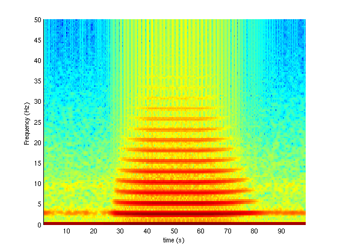

This is the readme for the model associated with the paper X. Zhao, P.A. Robinson (2015) Generalized Seizures in a Neural Field Model with % Bursting Dynamics. Journal of Computational Neuroscience This matlab file was supplied by Xuelong Zhao. Run by typing the name of the file at the matlab command prompt: absence_seizure() which will reproduce the simulation in Fig. 9 and generates these figures: 